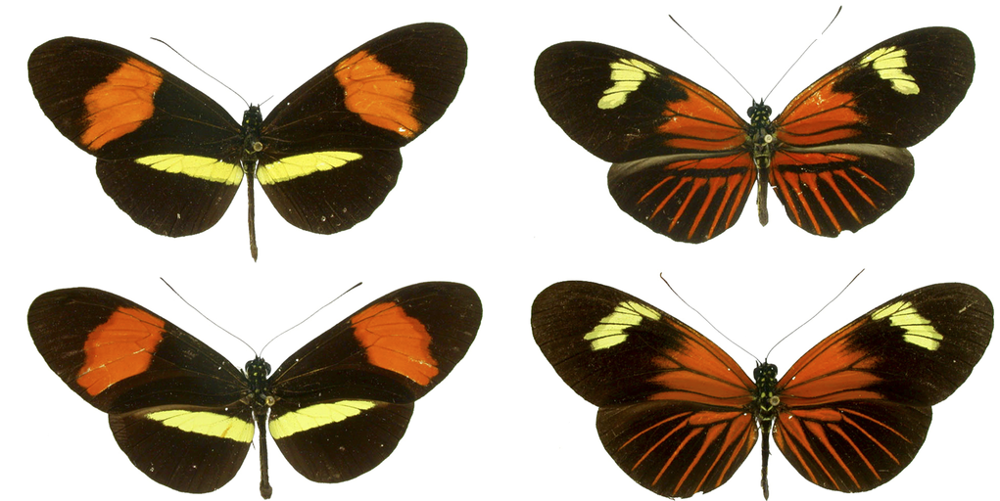
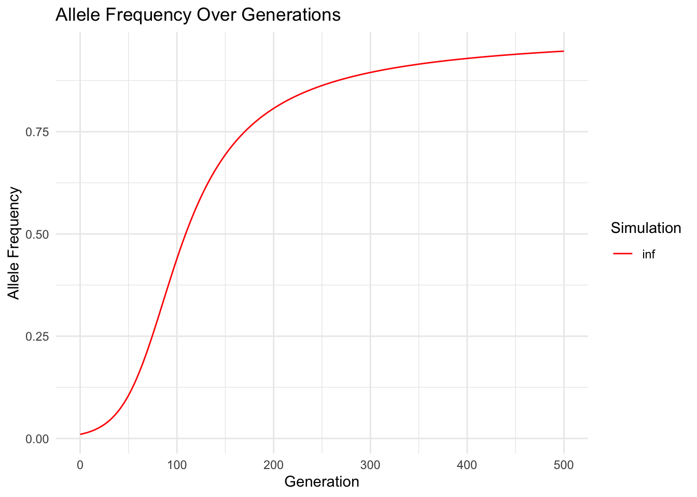
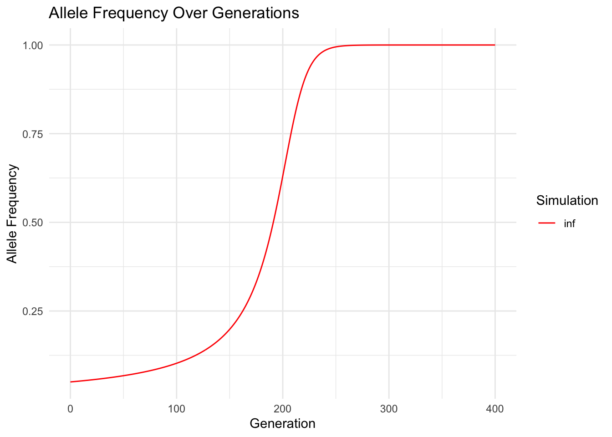
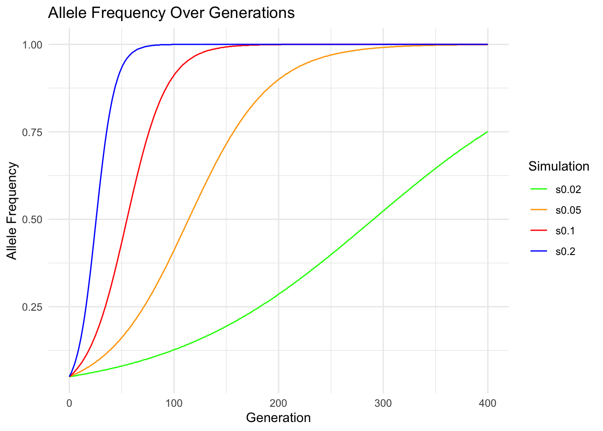
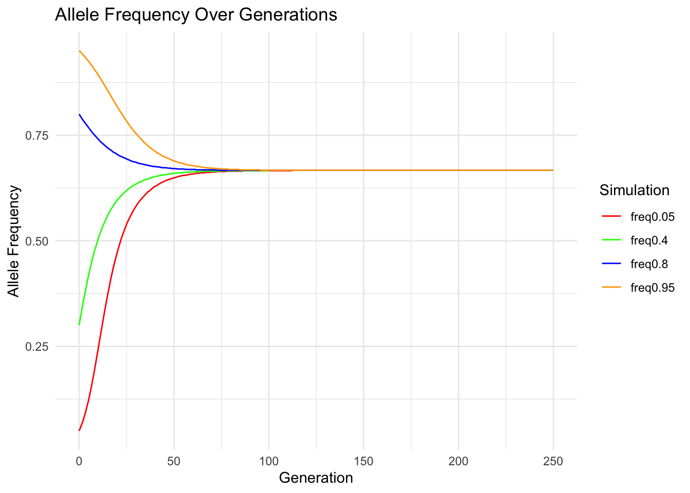
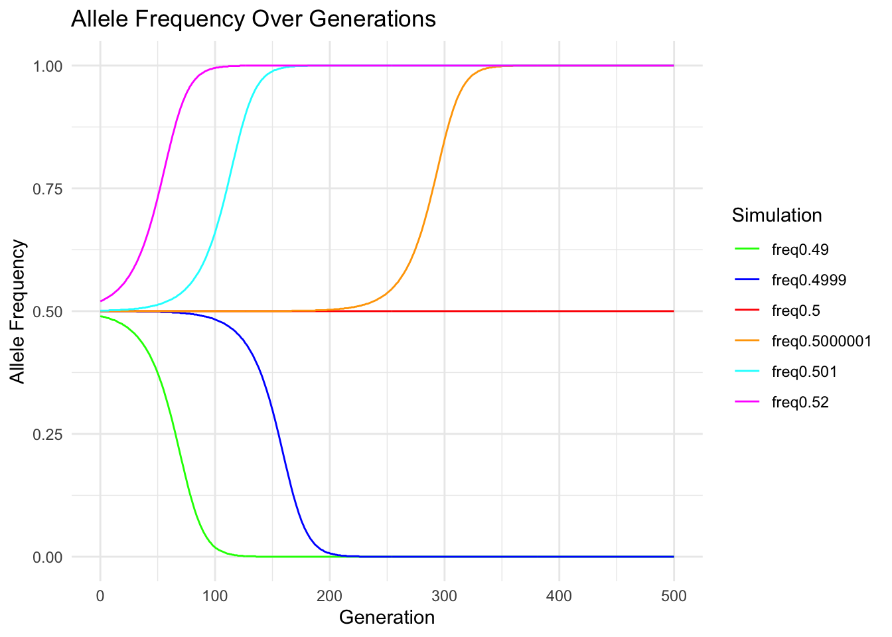
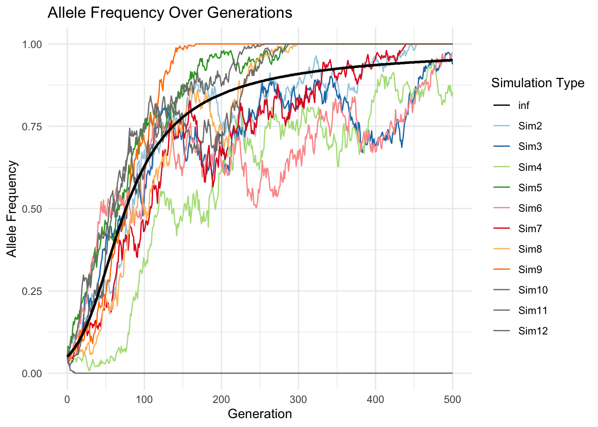
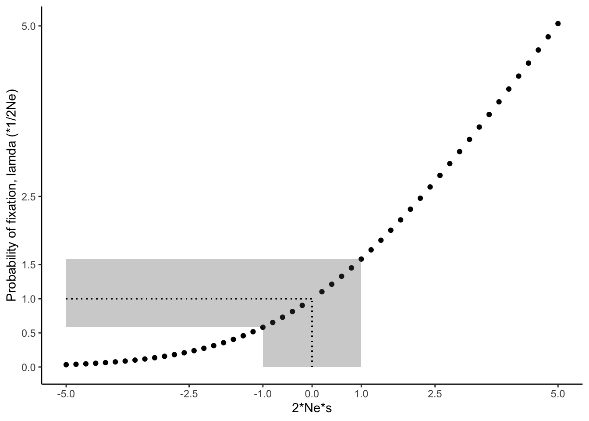

10 Mechanisms that drive evolution: natural selection
DRAFT 20250404
The Hardy-Weinberg principle we learned about in the last chapter provides a simple framework to test whether evolutionary forces are acting on a locus within a population. If a population is in Hardy-Weinberg disequilibrium at a particular locus, we know that an evolutionary force is skewing relative genotype frequencies away from what is predicted based on the allele frequencies in a population, and that allele frequencies may change over generations. Evolutionary forces might include selection, mutation, genetic drift, migration, or non-random mating. In this and the following chapters, we will get to know the different evolutionary forces in more detail, and we will explore how each force—and interactions between them—shapes genetic variation and allele frequencies across generations. To do so, we will use simple mathematical models to simulate allele frequency changes under different scenarios. First, we will learn how the outcome of selection varies depending on the fitness distribution among genotypes and the starting allele frequency in a population. In the following chapters we will expand this simplified view and also include mutation, genetic drift, migration, and non-random mating in our thinking.
10.1 The Effects of Selection
Rosemary and Peter Grant’s work has shown us how natural selection can drive rapid evolution of phenotypic traits. But what are the genetic ramifications of selection? How does selection impact genetic variation and allele frequencies at a particular locus? Per definition, we know that selection favors the success of certain genotypes over others; this is one way Hardy-Weinberg disequilibrium can be generated. It is this biased success of certain genotypes that ultimately causes allele frequency changes across generations. For example, if the fitness of an individual is contingent on the number of A alleles at a particular locus, we would expect the A allele to become more common than the a allele through successive generations.
Such allele frequency changes across generations are well documented from evolution experiments. For example, Dawson (1970) conducted research on flour beetles (Tribolium castaneum). In his colonies, he observed a recessive deleterious mutation, where individuals with two copies of the recessive allele (l) could not survive, but heterozygotes (wt/l) and individuals that were homozygous for the the wildtype (wt) allele had normal fitness. This represents a classical dominant-recessive inheritance. To test the evolutionary consequences of the deleterious recessive allele, Dawson assembled experimental populations composed solely of heterozygous individuals, which means that the allele frequencies of wt and l were both 0.5. He then let the populations evolve for several generations and measured the allele frequencies of wt and l in each generation. As you can see in Figure @ref(fig:recdel), the allele frequency of wt increased in each generation. Since p+q=1 for any biallelic locus, the frequency of l decreased concurrently. Hence, selection against the recessive lethal allele caused it to decline in frequency over time. This makes intuitive sense, considering the offspring of the heterozygous individuals of the initial population were 25 % wt/wt (p2), 50 % heterozygous wt/l (2pq), and 25 % l/l (q2). While all the individuals with at least one wt allele survived and reproduced, individuals that were homozygous for the recessive allele perished, disproportionately removing l alleles from the population.
Similar changes in allele frequencies can be observed if populations that are polymorphic at a particular locus are exposed to different environmental conditions. For example, many fruit fly (Drosophila melanogaster) populations are polymorphic at the Adh locus, which encodes alcohol dehydrogenase, the same enzyme that detoxifies ethanol in your liver after a fine glass of wine. The two alleles in fruit flies differ in the rate at which they process ethanol, including a fast allele (Adhf) and a slow allele (Adhs). Cavener and Clegg (1981) used populations with this polymorphism, letting different replicate populations evolve on media that contained alcohol, or in non-alcoholic control populations. While the control populations only exhibited minor fluctuations in allele frequencies across generations, the frequency of the Adhf allele significantly increased in populations exposed to ethanol (Figure @ref(fig:ethanol)). The difference in evolutionary trajectories can be explained by the fitness benefit the Adhf allele confers in different environments: when ethanol is present, having faster detoxification is clearly advantageous. But if there is no ethanol in the environment, it does not matter whether you can detoxify it faster or slower, and genetic variation at the Adh locus becomes neutral.
Evidence for change in allele frequencies in response to selection does not just come from laboratory experiments, but also from natural populations where time series of the genotypic composition of populations are available. One of the most amazing data sets in recent years comes from over 540 whole or partial genome sequences that were obtained from fossilized human remains—some of which are almost 14,000 years old. This time series spans some major transitions in human evolution, including the advent of agriculture and correlated changes in human diets that occurred about 10,000 years ago. Around that time, humans also started to domesticate livestock for meat and milk production. Many of these changes represented novel sources of selection, especially the availability of milk as a dietary component past weaning and into adulthood. As much as mammals rely on milk for nutrition right after birth, this food source is not really available to any species after weaning. Accordingly, the production of lactase—the enzyme that mediates digestion of milk sugar (lactose)—stops after weaning, leaving adult mammals unable to digest lactose. Some of you may be familiar with that problem. Depending on your heritage, you may feel significant discomfort after eating dairy, because your body cannot handle the lactose (this is known as lactose intolerance). It turns out that lactose intolerance is prevalent in human populations that do not have a cultural history of using domesticated animals for milk production. This raises the question of how lactose tolerance evolved in populations that do have a history of dairy use. Analyses of ancient DNA indicated that alleles conferring lactose tolerance (also known as lactase persistence alleles) were virtually absent in human populations prior to the domestication of dairy animals (Figure @ref(fig:lactase)). In European populations with a history of dairy farming, lactase persistence alleles did not start to spread until about 5,000 years ago, matching the timeline of domestication. Overall, empirical evidence from experiments and natural systems indicates that selection can have profound impacts on allele frequencies even over relatively short time frames.
10.1.1 Frequency-Dependent Selection
While evolution experiments usually create conditions where the direction and strength of selection remains constant, selection in natural populations often varies spatially or temporally. For example, fluctuating selection can be associated with environmental change, which was exemplified in Darwin’s finches, whose beaks can evolve to be larger or smaller dependent on the available food resources. A special case of fluctuating selection is frequency-dependent selection, where the fitness of a genotype depends on the genotypic composition of the population. We distinguish two types of frequency-dependency: positive and negative.
In positive frequency-dependent selection, the fitness of a genotype increases as it becomes more common in a population, and consequently, selection rapidly drives common alleles to fixation. Positive frequency-dependent selection plays a major role in the evolution of signaling traits, where the efficiency of a signal is dependent on the frequency of its use. Notable examples include the evolution of social signals, flower coloration for pollinator attraction, and warning signals that indicate danger or unpalatability.
A great example of positive frequency-dependent selection includes selection on warning signals in toxic, South American butterflies of the genus Heliconius. Some Heliconius species exhibit extensive geographic variation in their warning colors, but different species in the same geographic region are often strikingly similar (Figure @ref(fig:heliconius)). This is because different species in the same region mimic each other, developing shared signals to deter predators. Similar signals mean that predators are more likely to recognize the pattern of unpalatability. This is similar to the independent evolution of yellow and black stripes in wasps, bees, and many other insects that signal danger.

Chouteau et al. (2016) tested whether positive frequency-dependent selection could explain the evolution of mimicry in Heliconius butterflies. They used prey models and placed them in different Heliconius populations that varied in the relative frequencies of different warning colorations, predicting that the rate of predation would be low if models matched the common warning phenotype. Indeed, models that resembled rare morphs were much more likely to be attacked by predators than models that resembled the common morph (Figure @ref(fig:posfreqdep)). In other words, the more common a particular morph is, the less likely it is to succumb to a predator, and consequently, it will have a higher fitness compared to the rarer morphs. Over the course of multiple generations, such positive frequency dependent selection can generate the evolution of coordinated warning signals across species inhabiting the same region.

In negative frequency-dependent selection, the fitness of a genotype declines as it becomes more common. Negative frequency-dependency is a mechanism by which genetic variation is maintained in a population, and it can be an important evolutionary force acting on a wide variety of traits. Perhaps most well-known is how negative frequency-dependence shapes the evolution of many traits associated with host-pathogen interactions. As certain host defense strategies become more common, pathogens rapidly evolve to adapt to those defenses. As a consequence, individuals with more common defense strategies exhibit lower fitness than rare ones, leading to fluctuations in genotype frequencies over time.
Another great example of negative frequency-dependent selection comes from the orchid Dactylorhiza sambucina, which exhibits a striking polymorphism in flower coloration (Figure @ref(fig:orchid)). While many plant communities are subject to positive frequency-dependent selection to coordinate signals for pollinator attraction, Dactylorhiza cheats: unlike most flowers, those of Dactylorhiza do not provide any rewards to pollinators in the form of nectar. As a consequence, pollinators learn to avoid Dactylorhiza flowers.

Dactylorhiza’s counter-adaptation to this learned avoidance is a flower color polymorphism, which is thought to be maintained by negative frequency-dependent selection. The idea is that if one color morph gets too abundant and pollinators start avoiding it, then they simply switch to the rarer color morph that they do not associate with a lack of reward yet. If this was correct, the fitness of a color morph should decline with its frequency. Gigord et al. (2001) tested this idea by conducting an experiment where they varied the relative frequency of different color morphs and quantified reproductive success. As predicted, male reproductive success was negatively correlated with relative frequency of the morph (Figure @ref(fig:negfreqdep)), indicating a rare morph advantage that is characteristic for negative frequency-dependent selection.

10.2 Modeling the Effects of Selection
While the consequences of selection in terms of changing allele frequencies may seem trivial at first sight, the exact outcome of selection actually depends on a number of parameters, including the starting allele frequency and the fitness distribution across different genotypes. To develop a nuanced understanding of alternative evolutionary outcomes in response to selection, we will use simple mathematical models to explore how different starting conditions shape evolutionary trajectories. In the following sections we will explore the conceptual background on how these mathematical models work. Then you will learn how you can easily run different models in lab.
10.2.1 Relative Fitness
Modeling changes in allele frequencies in response to selection requires a modification of the formulas associated with the Hardy-Weinberg principle. When calculating allele frequencies across generations, we have to take into account fitness differences between the genotypes. While fitness is typically measured through a variety of proxies in natural populations (e.g., survival, reproductive success, growth, etc.), having species- or even study-specific metrics for fitness is not conducive to mathematical modeling. So, rather than considering different fitness components, we can just subsume different metrics into a single, idealized measure of fitness, which is called relative fitness. Relative fitness expresses the fitness of different genotypes relative to each other, and it can be any positive number, including zero. In practice, we choose one genotype as a reference and set its relative fitness to 1 (representing 100 % fitness). The fitness of other genotypes can then be expressed in relation to the reference. Fitness values are higher than the reference (>1) if alternate genotypes have higher fitness and lower than the reference (<1) if they have lower fitness. The difference in relative fitness between genotypes is called the selection coefficient (s), indicating how fitness and selection are directly related to each other.
10.2.2 A generalized model for studying selection
To begin our exploration of selection, we will first develop a generalized model that will act the basis to conveniently explore the various ways selection can work. Assuming the following:
Assumptions of the population genetic models
- diploid organism
- sexually reproducing
- single locus (gene) - call it the A gene
- two alleles segregating in the population designated \(A_1\) and \(A_2\)
NOTE: Do not be confused by allele names. They are completely arbritrary for the most part. For example, if we are discussing two alleles at a gene, we can refer to them as \(A_1\) and \(A_2\), or \(A\) and \(a\), or \(George\) ad \(Martha\). It really does not matter. I prefer \(A_1\) and \(A_2\) for this discussion since it tends to sidestep any a priori assumption about dominant/recessive relationship between the alleles. I have found the concept of dominant/recessive relationship between the alleles to be a major stumbling point for many students, probably owing to the way genetics is first introduced via Mendel. We will discuss this idea a little later as we explore various models of selection. For now, consider both alleles are equally expressed, and therfore there is no dominant/recessive relationship
Referring back to the chapter introducing evolutionary genetics and the HW equilibrium (Chapter 8), there are three possible genotypes in this model due to random mating within the populaton: \(A_1A_1\), \(A_1A_2\), and \(A_2A_2\), which under our null model (HW equil) will occur in the following frequences: \(p^2\), \(2pq\), and \(q^2\).
Since we are modelling selection, we also need to include some measure of fitness, specifically a genotype-specific measure of relative fitness, which we will designate \(W_{ii}\) where the \(ii\) indicates any possible genotype. Because they are relative fitnesses, for our purposes we will define the fitness coefficients \(W_{ii}\) as ranging between \(0\longrightarrow1.0\). As mentioned above, we could have just as easily randomly assigned any genotype as our reference such that you could have a genotypic fitness \(W_{ii}>1.0\), but for reasons of clarity I prefer setting our favored genotype as our reference such that the \(W_{ii}=0\longrightarrow1.0\).
Genotype specific fitness coefficients
Recall our definition of fitness Note 4.1 from the chater on how selection works. A good way to think about what these genotype fitness coefficients mean is what percentage of individual with a specific genotype survive and produce to the next generation. For example, if all the individuals in our sample of a particular genotype (e.g. \(A_1A_1\)) survive and reproduce, we would assign a genotype specific fitness to that genotype as \(W_{11} = 1.0\). If however, we were to specify that only 90% of the individuals with that genotype got to survive and reproduce, than the genotype specific fitness would be \(W_{11} = 0.9\).
These genotype specific fitness coefficients are obviously related to selection, so we define \(s\) as the selection coefficient such that
\(W = 1-s\)
Another way to specify fitness coefficients then is as selection coefficients \(s\). As above, if we stated that 10% of the individual in our population failed to survive or reproduce, then when \(s=0.10\), \(W_{ii} = 1-s = 0.9\).
This is a concenient way to talk about the various types of selection, as you will see, and we will try to remain as consistent as possible using this way to discuss genotype specific fitness and selection coefficients throughout the rest of the this text.
Summarizing as a table, under the above generalized conditions, we can now ask the question what happens to the allele frequencies when selection is acting on the genotypes? This leads to following table:
| Genotype | \(A_1A_1\) | \(A_1A_2\) | \(A_2A_2\) | Sum |
|---|---|---|---|---|
| freq \(f_{ii}\) | \(p^2\) | \(2pq\). | \(q^2\) | \(1.0\) |
| fitness \(W_{ii}\) | \(W_{11}\) | \(W_{12}\) | \(W_{22}\) | |
| freq after selection | \(p^2W_{11}\) | \(2pqW_{12}\) | \(q^2W_{22}\) | \(\overline{W}\) |
| relative freq | \(\frac{p^2W_{11}}{\overline{W}}\) | \(\frac{2pqW_{12}}{\overline{W}}\) | \(\frac{q^2W_{22}}{\overline{W}}\) | \(1.0\) |
Note that “freq \(f_{ii}\)” are the HWequil frequencies for each genotype, the genotype specific fitness values are in the row labeled “fitness \(W_{ii}\)”. To calculate the genotype frequencies after selection, we would simply multiply the frequency of the genotype by the genotype specific fitness coefficient, as indicated in row labeled “freq after selection”. If we sum up these genotype frequencies after selection, the sum does not equal 1.0 of course since we are selectively removing some indiduals of a specific genotype (there for sum would be \(<1.0\)). However, if you have had a statistics course, you might notice that sum of the genotype frequencies after selection \(p^2W_{11}+2pqW_{12}+q^2W_{22}\) is how we can calculate an average, so we define:
\[ p^2W_{11}+2pqW_{12}+q^2W_{22}=\overline{W} \tag{10.1}\]
Since these are relative fitness’, we want the sum of the frequencies after selection to equal \(1.0\). To do this, we simply divide each gentype frequency after selection by the mean population fitness \(\overline{W}\), as indicated on the last row of the table labeled “relative freq”:
\[ \frac{p^2W_{11}}{\overline{W}} + \frac{2pqW_{12}}{\overline{W}} + \frac{q^2W_{22}}{\overline{W}} = \frac{p^2W_{11}+2pqW_{12}+q^2W_{22}}{\overline{W}}= 1.0 \tag{10.2}\]
Tip
The table above serve as our entry point to explore various models of selection, so take a few minutes to look over Table 10.1 and make sure you understand what the table is showing.
10.2.3 Deriving a generalized equation for selection
We now have estimates of the relative genotype frequencies after selection as shown in Table 10.1. However, based on our definition of evolution, what we really want to know are the allele frequencies and whether they have changed or not. Since we have the genotype frequencies, we can easily calculate the allele frequencies using Equation 8.2 in the introduction to evolution genetics section. Substituting the values using the last row of Table 10.1 into Equation 8.2 and performing a little algebra:
\[ f_{(A)}=f_{AA}+\frac{1}{2}(f_{Aa}) \]
\[ f_{(A)}=p'=\frac{p^2W_{11}}{\overline{W}}+\frac{1}{2}(\frac{2pqW_{12}}{\overline{W}})=\frac{(p^2W_{11}+pqW_{12})}{\overline{W}} \tag{10.3}\]
The above equation tells us what the allele frequency for the \(A\) allele is in the next generation after selection. This is useful, but again we are interested in the change in allele frequency \(\Delta p\), which is simply \(\Delta p = p'-p\), where \(p'\) is from Equation 10.3.
\[ \Delta p = \frac{(p^2W_{11}+pqW_{12})}{\overline{W}}-p \]
After some more algebra which we will not show, the above equation is simplified to:
\[ \Delta p = \frac{p}{\overline{W}}(pW_{11}+qW_{12} - \overline{W}) \tag{10.4}\]
There are various other forms of this generalize equation, but I prefer this version (at this point anyway) because it allows us to make the following important observation. As with a lot of seemingly complicated equations, which can seem a little intimidating, the best way to make sense of them is to break them into smaller pieces and ask what happens when one part is larger than another. In this instance, ignore the \(\frac{p}{\overline{W}}\) for now. Inside the curly brackets, the term \((pW_{11}+qW_{12})\) is a weighted average, in this case the weighted average fitness for allele \(A\). The other term in the brackets is \(\overline{W}\), the mean population fitness. Just focus on these two terms for now.
What happens when the mean fitness of allele \(A\) is greater than the mean population fitness \(\overline{W}\)? When \((pW_{11}+qW_{12}) > \overline{W}\), then \(\Delta p\) will be positive: the frequency of allele \(A\) will increase in the population.
When the mean fitness of allele \(A\) is less than the mean population fitness \(\overline{W}\), then \((pW_{11}+qW_{12}) < \overline{W}\) and \(\Delta p\) will be negative: the frequency of allele \(A\) will decrease in the population.
This is an important insight. What this is telling us is that in order for an allele to be favored and increase in frequency in a population, it just needs to be better on average than the mean population fitness. In other words, rewording this to reflect beyond genes and alleles, you do not need to be biggest, badest. or best out there, just just need to be better than average to be favored by selection. This is a profoundy different way to think about selection and fitness. It is relative to those around you. We mentioned this earlier in the chapter on the nature of natural selection, and here we have mathematical proof.
10.2.4 A diversity of selection models
In terms of our discussion on selection, Equation 10.4 is very important in helping to explore how selection works when taking into account the relationship between the two alleles and their impact on the phenotype (fitness in this case). What we mean by this is, recalling your basic genetics from intro biology or BIO211 genetics, in a diploid organism with two alleles, there are two homozygous genotypes (\(A_1A_1\) and \(A_2A_2\)) and one heterozygous genotype \(A_1A_2\). In the heterozygous genotypes, the two different alleles can interact in such a way as to impact the phenotype (fitness) of the heterozygotes. You saw this with classic Mendelian genetics where Mendel used traits (like pea color) where one allele dominated over the other in the heterozygotes such that the heterozygotes could not be differentiated from one of the homozygotes. This is called a dominance-recessive relationship among alleles, and though not all alleles at different genes are either dominant or recessive (a mistake many students unfortunately make), many are.
It is essential that we understand how dominance/recessive, or a lack thereof, impacts the heterozygotes since according to Equation 10.4, that will impact what happens to the frequency of alleles in the next generation. When we talk about a diversity of selection models, this is one aspect of what we are talking about. We will be exploring what happens in the case of complete dominance, incomplete dominance, co-dominance, heterozygous advantage, and heterozygous disadvantage since each of these models will have important consequences to how selection works and the impact it has on changing allele frequencies over time.
Important 10.1: What is dominance and recessive mean?
Before moving on to the different models, I have found that gaining a more nuanced understanding of dominance/recessive and the impacts on fitness of the heterozygotes really helps to appreciate the distinction among these models. So, before diving into the models, what is dominance; how do we define it?
We formally define dominance/recessive based on the impact on the phenotype (fitness here) in the heterozygote genotype. On a scale of phenotypic effects, if the heterozygote is half way between the two homozygotes, then there is no dominance/recessive relationship between the alleles. This is classically referred to as codominance, but I really dislike this term. Since neither allele dominates in the heterozygote expression of the phenotype, it is incorrect to even use the term in this situation.
If however the heterozygote expresses the phenotype somewhere between the two homozygote genotypes other than half way, then we have a dominance/recessive relationship between the alleles. If one allele is dominant, than the other must be recessive. Allele impacts on the genotype can be either advantageous, meaning they tend to increase fitness, or deleterious, meaning they have a negative impact on fitess. Complete dominance is when the heterozygote phenotype is exactly the same as one of the homozygotes. This was case with many of the characters Mendel worked with, and is fairly common in genomes (as best as we can tell).
If we assume additive effects of the allele interactions, then we can easily model the different patterns of dominance/recessive interactions by introducing a term designated \(h\) into our fitness coefficients. I am not sure what to call this term, but it is easy to remember: \(h\) implies impact on heterozygotes. \(h\) can range from \(0\longrightarrow1.0\). Recalling from above that our fitness coefficients are related to selection by \(W_{ii}=1-s\), we can then modify this relationship to:
\(W_{12}=1-hs\) with \(h\) ranging from \(0\longrightarrow1.0\)
This simple addition allows us to model all the possible dominance/recessive - advantageous/deleterious relationships of alleles in the heterozygotes.
| \(h\) | relationship of alleles |
|---|---|
| \(0\) | complete dominance advantageous allele |
| \(0<h<0.5\) | incomplete dominance advantageous allele |
| \(0.5\) | codominance (neither allele is dominant or recessive) |
| \(0.5<h<1.0\) | incomplete dominance deleterious allele |
| \(1\) | complete dominance deleterious allele |
Graphically:
There are a couple of reasons for focusing so much on this concept of dominance/recessive. First, in my experience many students get stuck into the idea that all allele relationships are dominant/recessive. I think it is the way genetics is taught early on in their biology education, with a focus on Mendel. True, many of Mendel’s characters were dominate/recessive, but that was either a coincidence or purposeful on his part. And though the evidence suggests that many genes have alleles segregating in a population that have a dominance/recessive relationship (recall the ABO blood group in humans), many also do not (again, ABO). Having a clear understanding of domiance/recessive reltionships and using the language of dominance only when warrated, it will prevent a lot of misunderstanding later on.
The second important reason for focusing on this concept is that the allele interactions in the heterozygote will have a profound impact on how selection acts to change the frequency of alleles in a population over time. These are models we will be reviewing next, so again best to have a solid understanding before diving into the various models.
We are now in a good position to introduce the various models we will be exploring. We develop the equations for each of the various models by defining the genotype specific fitness coefficients for each genotype, referred to as the fitness array. The table below lists the various models with their associated fitness arrays for the models we will be exploring.
| Genotype | \(A_1A_1\) | \(A_1A_2\) | \(A_2A_2\) | Model |
|---|---|---|---|---|
| \(1\) | \(1\) | \(1-s\) | Pure Dominance: advantageous dominant | |
| \(1\) | \(1-s\) | \(1-s\) | Pure Dominance: deleterious dominant | |
| \(1\) | \(1-hs\) | \(1-s\) | Incomplete dominance (\(0 < h < 1\)) | |
| \(1\) | \(1-0.5s\) | \(1-s\) | Codominance (\(h=0.5\)) | |
| \(1-s\) | \(1\) | \(1-t\) | Heterozygote advantage | |
| \(1\) | \(1-s\) | \(1\) | Heterozygote disadvantage |
By replacing the fitness coefficients with the selection coefficients, we can then plug the selection values into Equation 10.4, do a lot of math, and eventually derive an equation that defines how the frequency of alleles will change over time given a model of selection. We will not go over any of the derivations, though we certainly can explore these if you are interested. Rather, our approach will be to focus on undertanding the models themselves, make casual mention to the final equations for each, but use a simulation program in lab to explore the consequences of each model.
The derived equations for the models above are shown in the following table.
| Model | \(A_1A_1\) \(p^2\) \(W_{11}\) | \(A_1A_2\) \(2pq\) \(W_{12}\) | \(A_2A_2\) \(q^2\) \(W_{22}\) | Deterministic equations |
|---|---|---|---|---|
| Advantageous dominant deletereous recessive \((W_{11}=W_{12}>W_{22})\) | \(1\) | \(1\) | \(1-s\) | \(\Delta p=\frac{spq^2}{1-sq^2}\) \(\Delta q=\frac{-spq^2}{1-sq^2}\) |
| Additive fitness: advantageous partially dominant \((W_{11}>W_{12}>W_{22})\) | \(1\) | \(1-hs\) \(0<h<1\) |
\(1-s\) | \(\Delta p=\frac{spq}{2(1-sq)}\) |
| Heterozygote advantage \((W_{11}<W_{12}>W_{22})\) | \(1-s\) | \(1\) | \(1-t\) | \(\Delta p=\frac{pq(-sp+tq)}{(1-sq^2-tq^2)}\) \(\hat{p}=\frac{t}{(s+t)}\) |
| Heterozygote disadvantage \((W_{11}>W_{12}<W_{22})\) | \(1\) \(1+s\) |
\(1-s\) \(1\) |
\(1\) \(1+t\) |
\(\Delta p=\frac{pq(sp-tq)}{(1+sq^2+tq^2)}\) | |
10.3 Next Step
Using the information from the above section, in lab we will explore how the various selection models described above impact the change in allele frequencies over time. The easiest way to do this is using a simulation program that allows us to specify the various fitness arrays, the starting allele frequencies, and the number of generations to run the simulation. We will explore these models by breaking into small groups, running a series of simulations by altering the model parameters to reflect the model of interest, and at the end of lab collate our results and discuss what the important outcoe and consequences of the models say in terms of selection works.
10.4 Model Results
Below we will step through the results you should have seen in lab when running the simulations for the various models. In each instance we will define the model parameters, provide an example plot of the change in allele frequecies over time that hopefully is similar to what you probably saw, and end with a brief overview on the insights that model provides on how evolution works.
All models of selection required that you input a starting allele frequency (\(p_0\)) for the initial generation, the number of generations (time) you want the model to run for, and—perhaps most importantly—the fitness array for the three different genotypes. For simplicity, all of our models assume a diploid organism and a single gene with two alleles, which will be designated either \(A_1\) and \(A_2\), or \(A\) and \(a\), depending on the simulation app we use.
Since selection is blind to the genotype and can only act on phenotypic traits, it is important to consider different modes of inheritance when studying the possible outcomes of selection. While it is often assumed that most traits exhibit a dominant-recessive inheritance, this is not actually true. Hence, we will consider a number of scenarios beyond dominant-recessive inheritance to explore how selection actually impacts evolutionary outcomes.
Advantageous dominant/deleterious recessive (pure dominance)
In this model we are considering what happens in a situation where there is pure dominance, in this case for an advantageous allele \(A_1\).
Model settings
- Population Size: Infinite
- Generations: 500
- Starting Frequency of Allele \(A_1\): 0.01
- Fitness array: \(W_{11} = W_{12} > W_{22}\)
Example fitness values:
- Fitness Coefficient of \(A_1A_1\): 1.0
- Fitness Coefficient of \(A_1A_2\): 1.0
- Fitness Coefficient of \(A_2A_A2\): 0.95
10.4.0.1 Example plot of change in allele frequencies over time.

10.4.0.2 Outcome:
- selection will act to increase the frequency of the favored dominant allele (decrease the deleterious recessive)
- the advantagous dominant allele will increase in frequency inthe popiulation approaching fixation (\(p=1.0\)), however, it will never reach fixation
- the rate of increase will depend on the level of selection against the deleterious recessive allele; the higher the selection against the deleterious recessive, the faster the advantageous allele will approach \(p=1.0\), however \(p\) will assymptote out and the favored allele will never reach \(p=1.0\).
- the deleterious recessive allele will remain in the population, even though at a very low frequency
- even if at very low frequencies, sometimes the deleterious homozygous genotypes will be formed in a population, which will be acted on by selection
- even for a lethal deleterious allele (\(s=1.0\)), selection can not remove it from the population
- the deleterious allele effectively “hides” in the heterozygote such that selection can not act against it
10.4.0.3 Evolutionary implications
- deleterious recessive alleles can not be removed from natural populations
- natural populations may harbor a large number of deleterious recessive alleles
- every once in a while, homozygotes for deleterious recessive allele will result from random matings in the population
- this may explain the prevalence of many rare congenital diseases in human populations; they are the result of deleterious alleles hiding in heterozygous individuals that get expressed in situation when two hoterozygous parents have children.
Advantageous recessive/deleterious dominant (pure dominance)
In this model we are considering what happens in a situation where there is pure dominance, except in this case the advantageous allele \(A_1\) is recessive. In other words, we have a deleterious dominant allele that can mask the positive effects of the advantageous allele in the heterozygotes. How common this type of allelic relationship is in natural population is unknown. However, there is some evidence that it occurs. For example individuals that have the CCR5- \(\Delta32\) allele in the homozygous state tend to be resistant to infection from HIV and not progress to AIDS. There is some evidence, though limited, that heterozygous individuals (CCR5/CCR5- \(\Delta32\)) are not resistant to HIV infection, and may have similar survival profiles as homozygous individuals for the regular CCR5 allele.
Model settings
- Population Size: Infinite
- Generations: 500
- Starting Frequency of Allele \(A_1\): 0.01
- Fitness array: \(W_{11} > W_{12} = W_{22}\)
Example fitness values:
- Fitness Coefficient of \(A_1A_1\): 1.0
- Fitness Coefficient of \(A_1A_2\): 0.9
- Fitness Coefficient of \(A_2A_A2\): 0.90
10.4.0.4 Example plot of change in allele frequencies over time.

10.4.0.5 Outcome:
- selection will act to increase the frequency of the favored recessive allele
- at first \(A1\) increases in frequency slowly; however, eventually it reaches a frequency in the population where a sufficnet number of homozygote \(A_1A_1\) genotypes are present to cause selection to really work on the population, leading an exponential increase in the frequency of the allele in the population
- the advantageous recessive allele will continue to increase in frequency in the popiulation, eventually becoming fixed (\(p=1.0\))
- the rate of increase will depend on the level of selection favoring the advantageous recessive allele and its frequency in the population; the stronger selection is favoring the advantageous recessive, the faster it will approach \(p=1.0\)
10.4.0.6 Evolutionary implications
- even though the advantageous recessive allele is masked in the heterozygote state, eventually selection will cause it to increase in frequency in the population and eventually become fixed
Codominance
In this model we are considering what happens in a situation where there is no dominance/recessive relationship between the alleles. In this particular case, the heterozygote fitness is somewhere between the two homozygotes. As discussed above (Important 10.1), in this instance we would not consider either allele dominant or recessive, yet historically these models are referred to as codominance (where the heterozygote is half way between the two homozygotes) or incomplete dominance (where the heterozygote is not in the middle, but is closer to one homozygote or another). These two models are actually closely related to each, and can be referred to as a general class of additive models. Let’s just focus on the codominant model here for brevity’s sake, and then make reference to the results from other models later.
Model settings
- Population Size: Infinite
- Generations: 500
- Starting Frequency of Allele \(A_1\): 0.05
- Fitness array: \(W_{11} > W_{12} > W_{22}\)
Example fitness values:
- Fitness Coefficient of \(A_1A_1\): 1.0
- Fitness Coefficient of \(A_1A_2\): 0.95
- Fitness Coefficient of \(A_2A_A2\): 0.90 where s=0.1; (we will vary this for a couple of different simulations)
10.4.0.7 Example plot of change in allele frequencies over time.
In the following plot, we are actually plotting the results of the model described above where \(s=0.1\), as well as three others: \(s=0.02\), \(s=0.05\), and \(s=0.20\). This range of values of \(s\) are plotted to make a point about the effectiveness of selection in changing allele frequencies at a range of values, from relatively low and relatively high. In fact, these are all pretty high values of \(s\) generally speaking. Though it is difficult to determine exact selection coefficients, generally they seem to be around much lower than these values, perhaps around \(s<0.01\) in most instances. A selection coeficient of \(s>0.01\) would be considered pretty intense selection.

10.4.0.8 Outcome:
- selection will act to increase the frequency of the favored recessive allele
- depending on the intensity of selection, the frequency of the favored allele \(A1\) will increase relatively rapidly and eventually reach fixation (\(p=1.0\))
- the rate in which the favored allele goes to fixation depends on the intensity of selection; however, even if selection is relatively weak, the favored will still go to fixation; it just might take a while to get there
10.4.0.9 Evolutionary implications
- in codominant and incomplete dominance, the favored allele will always go to fixation, at a rate dependent on the intensity of selection
- even very weak selection will cause the frequency of the favored allele to become fixed over time
- the important lesson from this model is that any minor change in a character the increases the fitness of an organism will be acted on by selection, driving it to fixation in a population.
- this explains why we so such exquisite adaptations in natural populations, looking as if they were designed to serve a specific purpose; all it takes is a little advantage, and selection will grab onto that variant and drive it to fixation
- deleterious alleles will be purged from a populations, referred to as purefying selection
Heterozygous advantage
In the last couple of models we considered cases of when one allele was favored over the other, with the heterozygous genotype either having a fitness somewhere in between the two homozygous geneotypes (incomplete dominance, codominanace, or additive effects), or had the same fitness as one of the homozygous genotypes (dominance). But what happens when the heterozygous genotype has a higher fitness than either homozygous genotype? We refer to this type of model as heterozygous advantage, and the type of selection is referred to as balancing selection or overdominance.
How common is balancing selection? Again, we are not entirely sure, but studies and theory suggest it is pretty common. In fact, at one point in the history of evolutionary thinking, whether balancing selection was common or rare was central in the Neutralist-Selection debate which raged from the mid-1960s to the 1990s, and still continues in some fashion today.
To explore how heterozygous advantage works in theory, or model parameters should be as follows:
Model settings
- Population Size: Infinite
- Generations: 500
- Starting Frequency of Allele \(A_1\): 0.05 (we will vary this for a couple of different simulations)
- Fitness array: \(W_{11} > W_{12} < W_{22}\)
Example fitness values:
- Fitness Coefficient of \(A_1A_1\): 0.9
- Fitness Coefficient of \(A_1A_2\): 1.0
- Fitness Coefficient of \(A_2A_A2\): 0.8 where s varies by homozygous genotype; in this instance for \(A_1A_1\), \(s=0.1\); for \(A_2A_2\), \(t=0.2\); this is pretty intense selection.
10.4.0.10 Example plot of change in allele frequencies over time.
In the plot below, we actually ran four simulations that varied by starting frequency of allele \(A_1\): \(0.05\), \(0.4\), \(0.8\), and \(0.95\). We did this accentuate the results, which will be described below.

10.4.0.11 Outcome:
- frequency of the allele \(A1\) will converge on some value regardless of the starting allele frequency; we refer to this frequency as an equilibrium frequency, designated as \(\hat{p}\).
- the rate in which the starting allele frequency goes to \(\hat{p}\) depends on the intensity of selection against the two homozygous genotypes.
- once the \(p=\hat{p}\), the allele frequency will remain at \(\hat{p}\) even if the system is purturbed (i.e. for some reason the \(p\) is driven off \(\hat{p}\)); this is referred to as a stable equiibrium frequency.
- we can derive an equation for equibrium frequeny, which is \(\hat{p}=\frac{t}{s+t}\)
- that being said, if \(s=t\), regardless of how large \(s\) and \(t\) are, \(\hat{p}=0.5\)
10.4.0.12 Evolutionary implications
- heterozygous advantage, the frequency of the alleles will reach an equilbrium value determined by the level of selection against he two homozygous genotypes
- since the allele frequencies reach an equiblrium, both alleles are maintained in the population; in other words, unlike the above models of selection, heterozygous advantage, also known as balancing selection, works to maintain variation in the population
- though selection is acting on the population, the allele frequencies are not changing, so formally the populations is not evolving according our definition of evolution
- we have numerous examples of balancing selection acting in natural populations and believe it to be quite common, though it can be difficult to detect unless carefully tested for.
- In human populations, the mutation that causes sickle cell anemia has been shown to ne maintained in human populations due to balancing selection between sick cell anemia and the resistance to the parasite that causes malaria.
Heterozygous disadvantage
Our last model builds of the previous (Heterozygous advantage), only now we ask what happens to the frequency of alleles when the heterozygous genotype has the lowest relative fitness compared to either of homozygous genotypes. This model is referred to as heterozygous disadvantage, and is also referred to as underdominance.
We beleive that underdominance may play a very important role in sympatric speciation due to ecological divergence or sexual selection, topic we will be covering later in the semester.
To explore how heterozygous disadvantage works in theory, or model parameters will be as follows:
Model settings
- Population Size: Infinite
- Generations: 500
- Starting Frequency of Allele \(A_1\): 0.05 (we will vary this for a couple of different simulations)
- Fitness array: \(W_{11} < W_{12} > W_{22}\)
Example fitness values:
- Fitness Coefficient of \(A_1A_1\): 1.0
- Fitness Coefficient of \(A_1A_2\): 0.8
- Fitness Coefficient of \(A_2A_A2\): 1.0
10.4.0.13 Example plot of change in allele frequencies over time.
In the plot below, we actually ran four simulations that varied by starting frequency of allele \(A_1\): \(0.05\), \(0.4\), \(0.8\), and \(0.95\). We did this accentuate the results, which will be described below.

10.4.0.14 Outcome:
- given the fitness array, 1.0:0.8:1.0, under heterozygous disadvantage, since the fitness coefficients for the two homozygous genotypes are both 1.0, then there exists an equilibrium frequency that occurs when \(p-0.5\), as seen in the orange curve above.
- However, it runs out this is an unstable equilibrium, unlike the equilibrium seen in heterozygous advantage. Any purturbation that takes the allele frequency off the equilibrium value will cause the change in allele frequency to drive toward either fixation or loss, depending on if the purturbation changes the allele frequency to be greater or less than the equilibrium frequnecy. We can see that for the simulations where the starting allele frequency are 0.49, which leads to the \(A_1\) going to \(p=0.0\), and when the starting allele frequency is \(p=0.52\), where the \(p\) then approaches and reaches fixation (\(p=1.0\)).
- in fact, it takes even the slightest change off the equilibrium frequency to drive the system to either boundary, e.g. when starting \(p=0.5000001\), the \(p\) approaches and reaches fixation. Likewise, if the starting \(p=0.4999\), then \(p\) approaches and reached loss (\(p=0.0\)).
- if the fitness array is assymetrical, for example 1.0:0.8:0.9 for the three genotypes, then an unstable equilbrium exists but it will not be at \(p=0.5\). The 0.5 is due to selection acting equally on the two homozygous genotypes.
10.4.0.15 Evolutionary implications
- under heterozygous disadvantage, an equilibrium allele frequency exists, but it is an unstable equilbrium.
- any minor change in allele frequency will drive the system off the equilibrium, causing the allele to either become fixed or lost.
- since no population is infinite in size, there is always some measure of drift going on, and so this unstable equilibrium is never reached in natural populations; it is a theoretical equilibrium
- more importantly, this model shows us that if a heterozygous genotypes has a lower fitness in a population compared to the two homozygous genotypes, then natural can cause the population to effectively split into two separate groups
- underdominance then may be an important mechanism in ecological and sympatric speciation, which we will explore later in the semester when we discuss speciation.
- there are examples of underdominace leading to variation within and among popualtions in the literature
10.5 Drift and Selection
10.5.1 Interactions Between Drift and Selection
As already discussed (Chapter 9), genetic drift can have a large impact on the change in allele frequencies in small populations. When drift is intense, it can tend to complicate the effects of selection, sometimes leading to unexpected and counter-intuitive outcomes, i.e. genetic drift effects the fate of alleles under selection. Drift can cause deleterious mutations to be more common than expected by selection alone, and it can cause beneficial alleles to disappear from the population.
As an example of how drift can impact the effects of selection, consider the out come of the following model:

Notice how in Figure 10.7 the change in the frequency of alleles over time generally follow the plot for the infinite population size model we saw earlier, but with a substantial amoung of variation between generations and simulations. This obviously is due to drift acting on the population the same time as selection increases the frequency of \(A_1\) as expected. However, there are some very imporant differences. Fist, in several populations, the favored became fixed rather than reaching an asymptote as expected with an infinite population size (Figure 10.2). In fact, \(A_1\) became fixed \(p=1.0\) in 7 of the 12 simulations. When drift is introduced into the advantageous dominant allele (deleterious recessive) model, we actually can remove deleterious recessive alleles from the population. If we were to run this simulation with varying intensities of genetic drift, we would find that the probablility of losing the deleterious recessive is some function of the intensity of drift. That is one difference between what we would expect under an infinite population size model and one that incorporates drift, which has obvious consequences from an evolutionary perspective in terms how many deleterious recessive alleles we should find in a natural population.
But there is an even more interesting result, namely that in one of the simulations, we actually lost the advantageous allele. In other words, given sufficient levels of genetic drift, an advantageous dominant allele can be lost, with the deleterious recessive allele becoming fixed in a population. This is not supposed to happen under selection. Selection always acts to increase population fitness, and yet when drift occurs, you can find a decrease in the mean population fitness.
We could repeat these types of simulations varying the intensity of selection and drift for all the various models discussed above and find the similar results, that populations can lose advantageous alleles due to drift overcoming the effects of selection and model outcomes can be different from expectations. For example:
- rate to fixation or loss may be different from models with infinite population size
- can lose deleterious recessives under drift
- an advantageous allele may be lost under intense drift
- conversely, a disadvantageous allele may become fixed
- populations may not attain equilibrium allele frequencies (e.g. heterozygous advantage)
- in heterozygote disadvantage, populations will diverge since equilibrium is impossible due to drift
How does genetic drift impact the effects of selection? In theory, for selection to be effective, the selection coefficient \(s\) must be greater than \(\frac{1}{2N_e}\), or formally \(s>\frac{1}{2N_e}\). When \(s\) is less than \(\frac{1}{2N_e}\), than drift can overcome the effects of selection, and we can have unexpected outcomes compared to our theoretical models based on an infinite population size.
Looking at the relationship of drift and selection from a different perspective, generally speaking, the fate of alleles subject to selection and drift is dependent on the product of 2Nes, as depicted in Figure 10.8. If a new mutation is neutral (\(s\)=0, where here we use the nomenclature for \(s\) that a favorable allele has is \(s>1\) and a deleterious allele \(1>s>0\)1), the probability of fixation is \(\frac{1}{2N_e}\) (\(\lambda=1\); dotted line), as described above. If the new mutation is deleterious (\(s<0\)), then the likelihood of fixation becomes smaller than what is expected by chance, approaching zero for higher values of \(|2N_es|\) (Figure 10.8). In contrast, if the new mutation provides a fitness advantage (\(s>1\)), then the likelihood of fixation become greater than what is expected by chance under drift alone. For example, for \(2N_es = 5\), the likelihood of fixation for the new mutation is 5 times higher than what would be expected by chance.
The important point here is that the likelihood of fixation is dependent on both the strength of selection and the effective population size. \(2N_es\) can be large when selection is strong or when populations are large. When populations are small, selection on novel alleles needs to be comparatively strong for them to have a high likelihood of fixation. If a mutation only provides a minor fitness benefit, drift might cause its loss from the population before it ever has a chance to become common. Conversely, when population sizes are very large, novel alleles with minute fitness benefits can have a high likelihood of fixation. As a rule of thumb, evolution of novel alleles is primarily governed by genetic drift for \(2N_es\)-values between -1 and 1 (gray shaded area in Figure 10.8. Beyond that range, selection has the upper hand.

Drift and selection - the math
In case you are interested in the math underlying Figure Figure 10.8: The probability (\(Q\)) that a new mutation spreads in a population and eventually becomes fixed is dependent on the effective population size (\(N_e\)), the census population size (\(N\)), and the selection coefficient (\(s\)). \(\lambda\) is the fixation probability relative to neutral evolution (\(\frac{1}{2N_e}\)).
\[ \begin{aligned} Q = \frac{N_es}{N} \frac{1}{1-exp(-2N_es)} \\ \lambda = \frac{Q}{1/(2N_e)} \end{aligned} \]
Note that this relationship assumes that the fitness of the heterozygotes is intermediate between the two homozygotes:
\[ \begin{aligned} w_{Aa} = \frac{w_{AA}+w_{aa}}{2} \end{aligned} \]
This use of \(s>0>s\) as a way to distinguish advantageous, neutral, or deleterious alleles seems different from how we used \(s\) when setting up the fitness arrays for our selection models above. Actually it is different, but still consistent. For our purposes we specifically defined \(s\) as always positive such that \(W_{ij}=1-s\) made more intuitive sense. It really is a matter of perspective and convenience for the math that defines the models and how we think about selection. Try not to let this throw you for a loop. We are changing how we view \(s\) in this discussion to be consistent with how Tobler uses it in his OER.↩︎